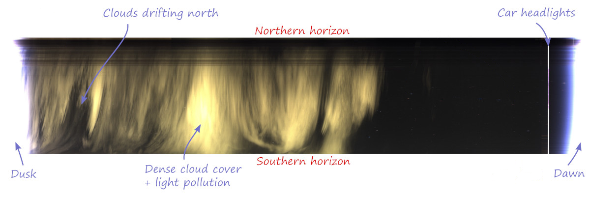

A keogram is an image that gives a quick view of a day's activity. A central vertical column 1 pixel wide is extracted from each image and added to the keogram from left to right.
Only images that are saved are included in a keogram, so if you don't save your daytime and/or nightime images, they won't be included.
To get the best results, North should be at the top of the image. If it's not, include --rotate DEG in the Keogram Extra Parameters setting in the WebUI, where DEG is the degrees of rotation. That way, using a fisheye lens, you end up with the bottom of the keogram being the southern horizon and the top being the northern horizon.
Keograms only show what happens at the center of the image and will not display events on the East or West.
Creating a keogram
You specify whether or not you want a keogram automatically created via the Generate setting in the Keograms sub-section of the WebUI. When enabled, a keogram will be created at the end of night and will contain information for the prior 24 hours.
The easiest way to create and optionally upload a keogram is via the
generateForDay.sh command.
For example, to create and then upload a keogram to any Allsky Website and/or remote server
you have for July 10, 2025:
generateForDay.sh --keogram 20250710 generateForDay.sh --upload --keogram 20250710This will use the settings specified in the Keograms sub-section of the WebUI.
If you want to experiment using other settings you can specify those settings as such:
generateForDay.sh --keogram --keogram-params "--font-color #ff0000" 20250710This will create a keogram with a red timeline for July 10, 2025, overwriting any keogram that may already exist.
Make sure the parameters are enclosed in quotes.
See the Advanced section below for the possible parameters you can specify.
Advanced users: running the keogram program manually
generateForDay.sh calls the keogram program
to actually create the keogram, passing it several arguments
(the underlined ones below),
plus any others you add to the
Keogram Extra Parameters setting.
Executing the keogram program manually is possible,
but not very useful.
If run manually you need to specify at least the three required arguments.
Usage: keogram -d <imagedir> -e <ext> -o <outputfile> [optional arguments]
Arguments:
-d | --directory <str> : directory from which to load images (required)
-e | --extension <str> : image extension to process (required)
-o | --output-file <str> : name of output file (required)
-r | --rotate <float> : number of degrees to rotate image, counterclockwise (0)
-s | --image-size <int>x<int> : only process images of a given size, eg. 1280x960
-h | --help : display this help message
-v | --verbose : Increase logging verbosity
-n | --no-label : Disable hour labels
-C | --font-color <str> : label font color, in HTML format (#0000ff)
-L | --font-line <int> : font line thickness (3)
-N | --font-name <str> : font name (simplex)
-S | --font-size <float> : font size (2.0)
-T | --font-type <int> : font line type (1)
-Q | --max-threads <int> : limit maximum number of processing threads. (use all cpus)
-q | --nice-level <int> : nice(2) level of processing threads (10)
-x | --image-expand : expand image to get the proportions of source - avoids tall and narrow images
-c | --channel-info : show channel infos - mean value of R/G/B
-f | --fixed-channel-number <int> : define number of channels 0=auto, 1=mono, 3=rgb (0=auto)
Font name is one of these OpenCV font names:
Simplex, Plain, Duplex, Complex, Triplex, ComplexSmall, ScriptSimplex, ScriptComplex
Font Type is an OpenCV line type: 0=antialias, 1=8-connected, 2=4-connected
Example of running the keogram program manually:
cd ~/allsky/bin ./keogram -d images/20250710 -e jpg -o images/20250710/keogram/keogram.jpg --rotate 42 --font-size 2
Troubleshooting
It is extremely rare that a keogram isn't created.
The resolution of all images must be identical; if not, only images with the same resolution as the FIRST image are used.
This can happen if the daytime and nighttime Binning settings are not the same, or any day you change the Image Resize and/or Image Crop settings.
- If a keogram isn't being created, make sure the Keogram
Generate setting is enabled.
If that IS enabled, run:
generateForDay.sh --keogram DATE
replacingDATEwith a valid date like20250710and check for errors. - If a keogram is created but not uploaded, make sure the
Keogram Upload setting is enabled.
If that IS enabled, run:
generateForDay.sh --upload --debug --keogram DATE
and check for errors. If needed, runtestUpload.shto see why the upload fails. - If your keograms are tall and skinny you can have them created so they look like regular images by enabling the Expand setting.